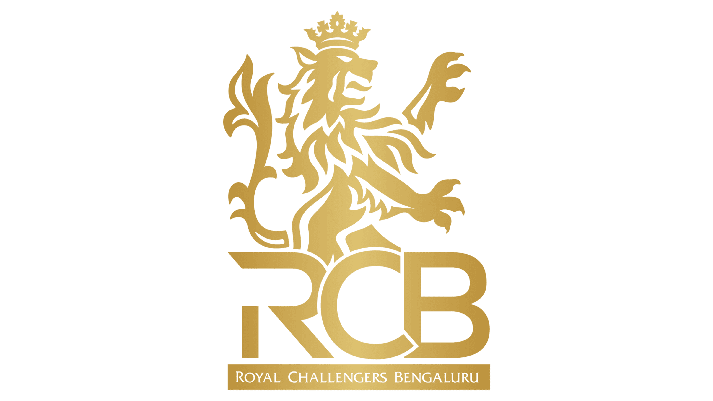

Club Heritage:
Royal Challengers Bangalore (RCB) was founded in 2008 and is based in Bengaluru. Known for its red and black colors, RCB has a massive fan base. The team has featured legendary players like Virat Kohli and is famous for its passionate supporters and thrilling matches in the IPL.